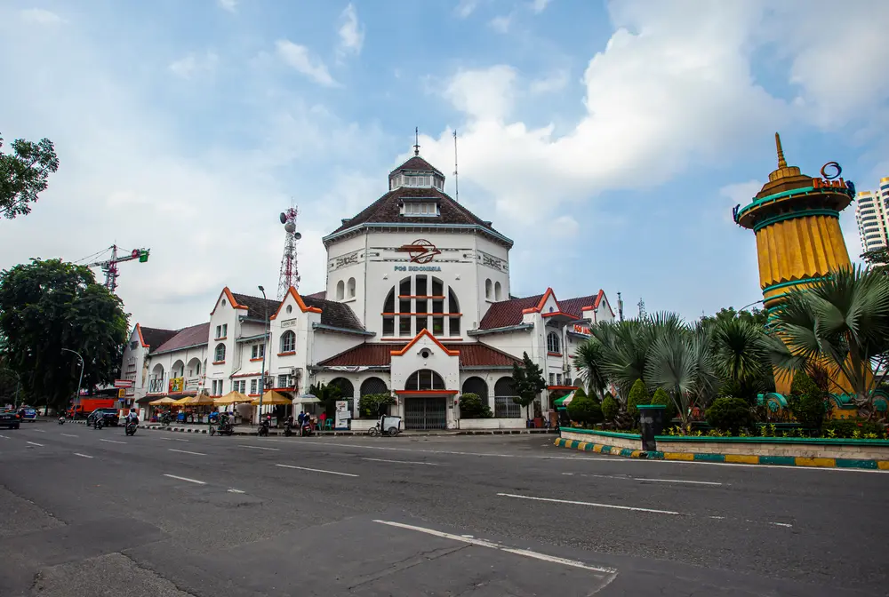

Kota Medan merupakan salah satu kota terbesar di Indonesia yang dikenal dengan keberagaman budaya yang sangat kaya. Berbagai suku, agama, dan tradisi hidup berdampingan, menciptakan masyarakat yang multikultural dan harmonis.
Website ini bertujuan untuk memberikan informasi mengenai kebudayaan Kota Medan, interaksi antarbudaya, serta dinamika sosial yang terjadi di dalamnya.
Melalui website ini, diharapkan pengunjung dapat lebih memahami dan menghargai keberagaman budaya yang ada di Kota Medan, serta mendapatkan wawasan tentang bagaimana masyarakatnya berinteraksi dan hidup berdampingan dengan damai.

2 backKeberagaman budaya di Kota Medan terlihat dari berbagai aspek kehidupan masyarakat, seperti bahasa, adat istiadat, kepercayaan, serta kebiasaan sehari-hari.
Setiap kelompok masyarakat memiliki ciri khas budaya masing-masing, namun tetap menjunjung tinggi nilai toleransi dan saling menghormati. Hal ini menjadi kekuatan utama dalam menjaga keharmonisan sosial di Kota Medan.
3 nextInteraksi kebudayaan di Kota Medan terjadi karena adanya hubungan sosial antar masyarakat yang berasal dari latar belakang budaya yang berbeda. Interaksi ini menghasilkan berbagai bentuk percampuran budaya.
Beberapa bentuk interaksi kebudayaan antara lain akulturasi, yaitu perpaduan budaya tanpa menghilangkan budaya asli, serta asimilasi, yaitu pembauran budaya yang menghasilkan budaya baru.
Selain itu, terdapat juga adaptasi dan integrasi budaya dalam kehidupan sehari-hari. Contoh interaksi ini dapat dilihat dalam penggunaan bahasa sehari-hari yang bercampur, kegiatan sosial, serta kehidupan bermasyarakat yang saling berbaur.
4 backDinamika sosial di Kota Medan merupakan perubahan yang terjadi dalam kehidupan masyarakat seiring berjalannya waktu. Perubahan ini dipengaruhi oleh berbagai faktor seperti globalisasi, perkembangan teknologi, pendidikan, dan urbanisasi.
Akibatnya, pola hidup masyarakat menjadi lebih modern. Namun, di sisi lain, masyarakat tetap berusaha mempertahankan nilai-nilai budaya yang telah diwariskan secara turun-temurun.
Budaya Khas Kota Medan
Kota Medan memiliki berbagai kekayaan budaya yang menjadi ciri khas daerah tersebut. Budaya tersebut meliputi kuliner khas yang beragam, kesenian tradisional, upacara adat, serta bahasa daerah.
Keberagaman budaya ini tidak hanya menjadi identitas masyarakat Medan, tetapi juga menjadi daya tarik bagi masyarakat luar.
5 nextPelestarian budaya di Kota Medan dilakukan melalui berbagai cara, seperti mengenalkan budaya kepada generasi muda sejak dini, mengadakan festival budaya, serta memanfaatkan media sosial sebagai sarana promosi budaya.
Selain itu, peran masyarakat dan pemerintah sangat penting dalam menjaga agar budaya daerah tetap lestari di tengah perkembangan zaman.
6 backDi era modern, pelestarian budaya menghadapi berbagai tantangan. Pengaruh globalisasi dan budaya asing dapat menyebabkan berkurangnya minat generasi muda terhadap budaya lokal.
Selain itu, perubahan gaya hidup masyarakat juga dapat menggeser nilai-nilai tradisional. Oleh karena itu, diperlukan kesadaran bersama untuk tetap menjaga dan melestarikan budaya.
7 nextUlos adalah kain tenun khas yang sangat penting dalam budaya Batak Untuk pria: pakai jas atau baju adat dengan ulos disampirkan di bahu Untuk wanita: kebaya atau gaun dengan ulos sebagai selendang Biasanya dipakai saat pernikahan, upacara adat, dan acara resmi
8 backGondang Naposo adalah tradisi perjodohan unik suku Batak Toba yang mempertemukan muda-mudi (naposo) untuk mencari pasangan hidup melalui musik gondang dan tari tor-tor.
Tradisi turun-temurun ini sering disebut "Take Me Out" versi Batak, bertujuan mempererat tali silaturahmi, mempromosikan budaya lokal, dan membantu pemuda-pemudi menemukan jodoh.
9 nextKebudayaan Kota Medan merupakan kekayaan yang harus dijaga bersama. Keberagaman budaya yang ada menjadi kekuatan dalam menciptakan masyarakat yang harmonis, toleran, dan saling menghargai.
Dengan adanya upaya pelestarian yang terus dilakukan, diharapkan budaya Kota Medan dapat tetap bertahan dan berkembang di masa depan.
10 back